По сути, это произвольное сочетание рун, которые выстраиваются в линию друг за другом. Их может быть две, три, четыре и даже больше. В такой простой формуле одна энергия переходит в другую. Нужно знать, что, хоть они и называются простыми, составление любых рунических формул – это сложный процесс, требующий не только очень хорошего знания рун, но и понимания магических законов. Практик должен очень четко видеть логику пути от начала и до конца. Помните, что перемена рун местами в одном и том же ставе кардинально меняет результат. Начиная писать руноскрипт, важно знать исходную точку и желаемый результат.
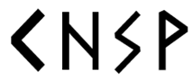
Возьмем для примера такой став: Кано – Хагалаз – Соулу – Вуньо. Это формула освобождения от блоков, разрушения преград. Кано открывает пространство, запускает действие. Далее Хагалаз вычищает пространство. Соулу продолжает чистку. А Вуньо открывает позитивные возможности. Эти три руны (Хагалаз, Соулу, Вуньо) часто используются для энергетических чисток, работы на уровне подсознания и очищения на всех планах. Приведу еще несколько примеров.
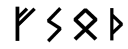
Феху – Соулу – Оттила – Турисаз. Феху запускает процесс в материальном мире, Соулу обеспечивает его успешность, Оттила подключает энергию рода (семьи) – энергию сильную и первозданную. И закрепляется эффект руной Турисаз. Вообще, эту руну часто используют для закрепления результата и перехода на новый уровень.
Став этот универсальный, так что намерение в него закладывает практик, и это важно. Результат устанавливает практик! Вектор задает практик! Руны – лишь инструмент мага. Практик должен видеть, понимать и чувствовать на десять шагов вперед. И нести ответственность за свои действия.
Феху – Гебо – Оттила. Феху запускает процесс, материализует желаемое в мире. Гебо – это хорошее, долговременное, надежное партнерство. Оттила – род и все, что с ним связано. В целом, речь идет о настоящем партнерстве внутри семьи. Придать ставу окраску и наполнить деталями – задача практика.
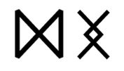
Дагаз и Ингуз! Дагаз – это обнуление, завершение, переход на новый цикл. Дагаз – это двадцать четвертая руна, которая говорит о том, что цикл пройден и время переходить на новый уровень. Ингуз отвечает за вопросы здоровья. Если собрать их воедино, станет понятно, что став создан для обнуления всех проблем со здоровьем.
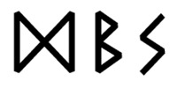
Дагаз – Беркана – Соулу. Попробуйте сами проследить логику. Вернитесь к описанию рун, вспомните свои чувства, когда вы проживали каждую из этих рун. Почему став состоит именно из них?
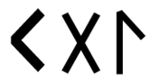
Кано – Гебо – Лагуз. В данном случае став звучит так: открытие партнерства для женщины. Кстати, подумайте, какой став можно сделать на раскрытие женственности. Чем он будет отличаться от этого?
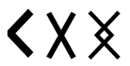
Кано – Гебо – Ингуз. Проведите аналогию с предыдущим ставом.
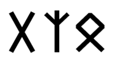
Гебо – Альгиз – Оттила. Альгиз здесь выступает как структура, Гебо – как дар (в том числе красноречия), чтобы гармонизировать отношения двоих людей. Оттила в данном случае указывает на близкие человеческие отношения (мы все друг другу братья и сестры). Оттила означает единство.
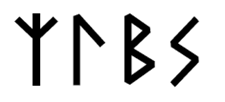
Альгиз – Лагуз – Беркана – Соулу. Напомню, что Лагуз отвечает за психоэмоциональное состояние. Через Альгиз мы вводим Лагуз в сферу здоровья, которую символизирует Беркана. А Соулу дарит чистоту. Так человек обретает здоровье и внутреннее равновесие.
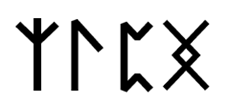
Альгиз – Лагуз – Перт – Ингуз. Перт отвечает за клеточный уровень и скрытые процессы. Ингуз – это стабилизация общего фона здоровья. Лагуз – это психоэмоциональный аспект. А через Альгиз мы выводим весь негатив.
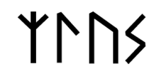
Альгиз – Лагуз – Уруз – Соулу. Делаем акцент на психоэмоциональной составляющей Лагуз, наполняем ее энергией через Уруз и вычищаем пространство с помощью Соулу.
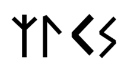
Альгиз – Лагуз – Кано – Соулу. Альгиз открывает став и говорит о покровительстве высших сил, мы как бы запрашиваем это покровительство, просим помощи в следующих действиях. Лагуз – это объект, через который мы раскрываем психоэмоциональный фон, а Кано открывает его для очищения и наполнения через Соулу.
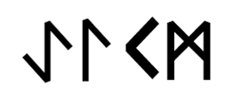
Эйваз – Лагуз – Кано – Манназ. Третий глаз – это умение чувствовать и видеть больше обычного человека, что перекликается с энергиями Лагуз. Эйваз в данном случае мы используем как границу между мирами. Манназ – финальная руна, которая при помощи Кано открывает это новое умение в человеке.
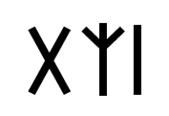
Гебо – Альгиз – Иса. Гебо – это партнерство, Альгиз – защита, Иса – остановка. Получается: защита отношений через остановку любого внешнего или магического действия в отношении пары.
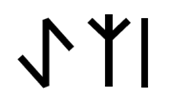
Эйваз – Альгиз – Иса. Защита от темного через Альгиз, или покровительство. Иса встает на пути чужих энергий как стена. Эйваз – это выбор, дуальность.
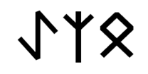
Эйваз – Альгиз – Оттила. Эйваз – это выбор, а в выборе всегда есть провокация. И в данном случае, помимо того, что Эйваз сама по себе защитная руна, Альгиз еще и защищает от неправильного выбора на уровне высших сил. Защита семьи – Оттила.
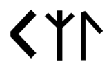
Кано – Альгиз – Лагуз. Кано – огонь, Альгиз – защита, Лагуз – вода.